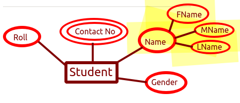

ER Model
ER model is a digramatical way of representing the proposed schema of the database. It's used as a blueprint to show to the customer and also used by programmer while actually creating database on system.
Entity : Any object which has physical significance.
For ex: Student, teacher etc
Attributes : The characteristics of an entity.
For Ex: Student - Name, Age, Sex etc.
Relationship : The relationship between different entities.
~~~~~~~~~~~~~~~~~~~~~~~~~~~~~~~~~
Types of attribute in ER model
→ Single Vs Multi - valued Attribute
⇒ Singlevalued attribute : Attribute which can have only one value. For Ex: Registration Number.

⇒ Multivalued attribute : Attribute which can have more than one value. For Ex: Contact number, Email ID etc.
→ Simpl Vs Composite Attributes
⇒ Simple Attribute : Whose values can't be subdivided. For Ex: Age, Gender etc.
⇒ Composite Attribute : Whose value can be further subdivided. For ex: Name(FName , MName LName), Address (Plot No, Area , City, Country) etc.

→ Stored Vs Derived Attribute
⇒ Stored Attribute : Whose value is fixed and is not derived/calculated. For Ex: Gender, DOB, Name etc.
⇒ Derived Attribute : Whose value is derived from somewhere. Foe Ex: Age which is derived from DOB
→ Key and NonKey Attribute
⇒ Key Attribute : Attribute used to uniquely identify a row in a table. For Ex: Registration no, Roll number etc.
⇒ Non Key Attribute : Normal other attributes which can hold non unique values For Ex: Name, Gender etc.
→ Required Vs Optional Attributes [Not in ER Model]
⇒ Required Attribute : Mandatory attributes. For ex : Name, Mobile number etc.
⇒ Optional Attribute : Attributes which are optional. For ex: Email, Middle name etc.
⇒ Complex Attribute : Attributes which are composite plus multivalued.
~~~~~~~~~~~~~~~~~~~~~~~~~~~~~~~~~
Degree of Relationship/ Cardinality of relationship/ Types of the relationship
Relationship: How two or more entities are related to each other.
Case 1 : One to One Relationship

Here one record in a Entity1(Table) is related to only one record in Entity2(Table)
For Ex: Each employee has one and only one account number and a unique account number is assigned to each employee.
Case 2 : One to Many Relationship
It's a relationship between instances of an entity with more than one instance of another entity.
For Ex: A student can work on more than one project but each project is done by a single student only.
Case 3 : Many to Many Relationship
It's a relationship between more than one instance of an entity with more than one instance of another entity.
Foe ex: Many Authors can write a book, whereas an author has written more than one book.